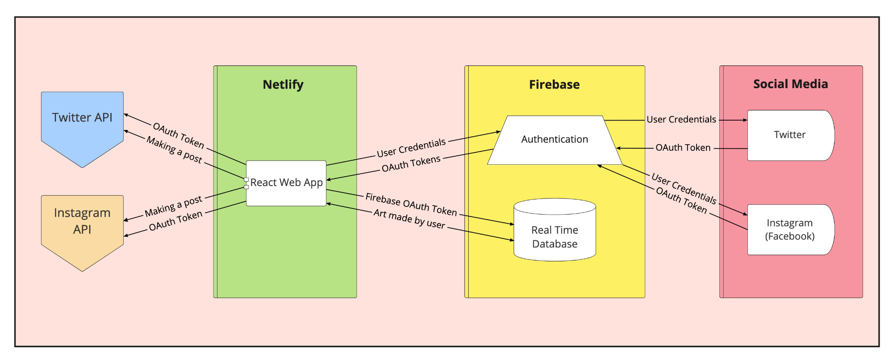

GetWell
Inspiring and cultivating mental health amongst women in tech through creativity
Spring 2022

Inspiring and cultivating mental health amongst women in tech through creativity
Spring 2022
Project Type: Website
Role: UX Designer
Tools: HTML, CSS, JavaScript, React, Figma, Netlify
In addition to the gender disparity in tech, the pandemic has detrimentally contributed to the mental health of women in tech
GetWell is an web application that aims to provide users with a solution to express themselves in a creative manner. Our team was inspired by passion for solving issues relating to mental health and ways we can emphasize its importance. Because of this, we decided to create an application that would address the problem statement in a less serious/unorthodox manner. GetWell was built with the hope that it would allow users to alleviate their stress, vent, and share their experiences with others through an artistic medium.
The main problem we wanted to address was mental health in our users, as it continues to remain as a leading worldwide concern. We found that the lockdown guidelines in the pandemic have negatively impacted young adults with existing mental health conditions. We also discovered that women working in STEM fields have reported greater levels of stress and anxiety, with higher incidences of depression. This data showed us how women are subject to unique stressors on account of the global pandemic. Furthermore, after reviewing the current online mental health resources, there are effective group therapy sessions to connect women, but these meetings have privacy issues because of zoom bombers who invade private online meetings
In order to address the problem space, our team went through a series of brainstorming to ideate a website that could solve this problem. We originally wanted to create a platform that would provide women with resources and support for overcoming the gender disparity in tech. However, we decided to take an approach that is unorthodox and different compared to the existing resources. We wanted to make something that would be fun and allow people to express themselves. With this in mind, we came up with the idea of creating a platform that would allow users to vent and share their experiences with others. From our research and experiences, we know that a lot of the younger generations tend to cope with negative emotions through memes and funny content. We wanted to replicate this experience within our application so we decided to head down towards the path of content creation.
Before developing our application, our team came together to discuss and decide which key features are necessary for our solution. There were so many different features we wanted to include, however, we had only 10 weeks to create a “finished” product. We had to sacrifice some features, like the resources page, to focus on our main canvas feature.
We chose to implement our solution as a React app hosted on Netlify, so that it can be enjoyed by anyone who has a computer and a link.
To better understand how our product will be implemented in real world solutions, we created Tiffany (she/her), our user persona. She is a 24 year old data scientist working at a major tech company. Since she’s pretty young, she’s been having a hard time adjusting to corporate life in a foreign country. She’s been experiencing imposter syndrome and has been feeling pretty down because of it. She wants to talk to her friends about it but all of her friends live in different time zones.
With a clear understanding of the features we want, we moved on to create a low fidelity wireframes so that our developers can start with a reference in mind. For this, we created different screens for each main feature of our product: Landing, Profile/Gallery, and Canvas. Through this, the entire team was able to ideate and visualize the solutions we had in mind and reach a consensus on how to execute our solution.
First Iteration: Moving onto high fidelity wireframes, we needed a clear picture of the design direction of GetWell. After thorough research, we wanted to incorporate a yellow palette to provide users with a brighter vibe. Using an orange-ish yellow as our accent color, we proceeded to create a wireframe that would be a blueprint to our website.
Second Iteration: A bit after we started building our product, our team realized that we had some constraints in time and hands. We aimed high with our product but found that we didn’t have the right resources at that time so we created a second iteration of our product that would better fit our resources and improve on our first iteration. In other words, we changed some features into stretch goals and focused on the functionality of our canvas page to provide users with a smoother experience.
Logo: We wanted a clear and concise logo by incorporating the initials of our product name while retaining the whimsical "doodle" vibe of our product. To do that, we sketched out logo ideas, we went through multiple iterations of logo design and came to a final design of this logo:
To get a gauge of how our product would work in the real world, we invited several participants to try out our product. We sat down with them and explained the general gist of our product, giving them several goals to accomplish with GetWell. Through this process, we were able to find a handful of bugs and some points of improvement. Here are some of the issues identified and how we address them:
With multiple iterations and long hours of bug squashing, we were able to release our product into the world! In the span of 10 weeks, we were able to experience the ups and downs of software development and pump out a functionable project. We put lots of effort and time into this, so please take your time to play around with GetWell!
Press the button below to visit our website!
visit GetWell